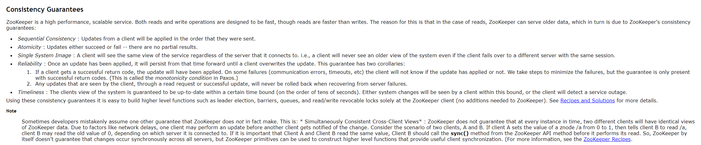
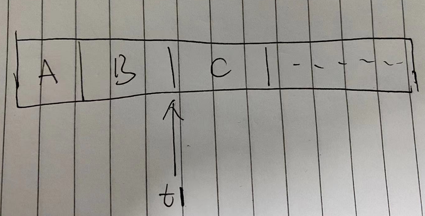

zookeeper中的一致性
前几天我看了Raft关于一致性读的操作，让我对于Raft - 扩展阅读这篇论文以及ETCD中读操作有了一些理解。
在实际的使用的这类服务中，写操作可能是比读操作少的，当我们需要优化读写性能时，就需要做一些功夫了。
和ETCD中很像的zookeeper，两者定位可以说都是非常相似的，在zk中，当zk节点越多，读性能相对越强，而在ETCD中，明显和这种情况不同，因为读写请求都需要leader进行响应，且还需要做一个Raft Log同步的操作，这也就会造成，节点多了，反而会导致性能下降。zk使用的zap协议，类似Raft一般，也是去维护日志，但却不影响zk的读取性能。为什么会造成这一现象呢？
ETCD是读操作是一致性读，不允许从不同节点读数据出现不一致的情况，所以即使是读数据的请求，也会被转发到leader节点来处理，这是已知的。zk则舍弃了这一点，允许client从节点读取数据，也就是说，允许出现数据与leader不一致的情况出现，但这个允许又是不太一样的。
一致性
zk的官方文档中，有对一致性保证的介绍：

来自于翻译。
zookeeper一致性的保证：
ZooKeeper是一种高性能，可扩展的服务，虽然读取速度比写入快，但是读取和写入操作都设计的极为快速，这样做的原因是在读取的情况下，ZooKeeper可能会提供较旧的数据，但这是为了ZooKeeper的一致性保证：
- 顺序一致性：来自客户端的更新将按照发送的顺序被写入到zk
- 原子性：更新操作要么成功要么失败，没有中间状态
- 单系统快照：客户端将看到服务的相同视图，而不管它连接到的服务器。
- 可靠性：一旦应用更新，数据将被持久化，直到数据被再次更新，对于该保证有两个推论：1、如果客户端得到了成功的返回码，说明写入成功，数据被持久化，如果出现了通信错误，超时等一些故障，客户端将不知道更新是否已应用。我们采取措施尽量减少失败，但唯一的保证是只有成功的返回码。 （这在Paxos中称为单调性条件。）2、如果客户端已经读取到了数据或者写入成功了数据，都不会因为zk的失败而导致回滚；
- 及时性：在一段时间后，客户端将看到最新的系统更新，在此期间客户端将看到这种变更。
有时开发人员错误地假定ZooKeeper实际上没有做出另一个保证：跨客户端的强一致性
ZooKeeper并不保证在每个实例中，两个不同的客户端将具有相同的ZooKeeper数据的视图。由于诸如网络延迟的因素，一个客户端可以在另一客户端被通知该改变之前执行更新，考虑两个客户端A和B的场景。如果客户端A将znode / a的值从0设置为1，则告诉客户端B读取/ a，则客户端B可以读取旧值0，这取决于它连接到的服务器。如果客户端A和客户端B读取相同的值很重要，则客户端B应该在执行读取之前从ZooKeeper API方法调用**sync()**方法。
因此，ZooKeeper本身不保证所有服务器上同步发生变化，但ZooKeeper原语可用于构建更高级的函数，提供有用的客户端同步。
zk的sync方法的解释：异步的实现当前进程与leader之间的指定path的数据同步；
解释
那zk一致性保证的是：
- 写请求是线性一致性的，读不是；
- 任何给定的client操作的执行顺序是由client来决定的，其称之为FIFO Client Order；
如果一个client表示，先执行这个写请求，然后再另一个写请求，接着再执行第三个写请求，在最终写请求的顺序中，我们会看到client的写请求的发生顺序是按照client所指定的顺序进行的。这是系统方面的一个问题，因为我们允许client发起写请求时，可以是异步的，在不等待任何写请求完成的情况下，一个client可以发送一堆写请求给ZooKeeper leader。
为了加强读性能，读请求可以由某些replica来处理，client所看到的就是replica上日志中的内容。
那读请求方面的FIFO client order的方式是：
对于连续的读请求，我们所观察到的日志点应该是一直向前走的。接连发起的两个读请求，第二个读请求看到的状态至少得是和第一个读请求（t1）看到的状态是一样新的。

另外，当我读到t1时，replica宕机了，当client切换到新的replica时，其依然需要保证FIFO client order（读请求必须在这个t1时间点或者是这个时间点之后执行，尽管它切换到了不同的replica上）。
这里的工作方式是，这里的每个日志条目都被leader用zxid打上了标签，replica会将这个读过的日志条目的zxid发送给这个client，client会记住这是最新数据的zxid。
FIFO client order会应用于单个client的所有请求，如果执行了一个client端的写请求，将这个写请求发送给leader，leader还没有来得及对它进行处理或者提交，然后，再将一个读请求发送给了一个replica，为了保证FIFO client order，对于这个读请求的处理可能会延后处理，这个读请求可能得等到直到这个client看到并执行完前一个写请求才行，这就是FIFO client order所带来的影响——读的顺序和写的顺序一致。
比较简单理解就是，如果我将某个变量的值设为17，然后读取该变量的值，如果它的值并不是17，那么这就很奇怪了，那么这就表明，这系统完全没按照顺序来执行我的请求。当client发送一个读请求，client知道client发送给leader的上一个写请求所携带该数据的zxid之类的信息，这个replica必须等到它在leader中看到这个zxid才能执行该读请求。
以上就是，文档中所说的，zk没有保证跨客户端的强一致性。当然，我们也可以通过**sync()**函数，来保证我们读到最新值。其他时候，我们的读操作都不是一致性的。
理论
在理论计算机科学中，CAP定理（CAP theorem），又被称作布鲁尔定理（Brewer’s theorem），它指出对于一个分布式计算系统来说，不可能同时满足以下三点：
- 一致性（Consistence) （分布式环境中，一致性是指多个副本之间，在同一时刻能否有同样的值）
- 可用性（Availability）（系统提供的服务必须一直处于可用的状态。即使集群中一部分节点故障。）
- 分区容错性（Network partitioning）（以实际效果而言，分区相当于对通信的时限要求。系统如果不能在时限内达成数据一致性，就意味着发生了分区的情况，必须就当前操作在C和A之间做出选择。）
根据定理，分布式系统只能满足三项中的两项而不可能满足全部三项。理解CAP理论的最简单方式是想象两个节点分处分区两侧。允许至少一个节点更新状态会导致数据不一致，即丧失了C性质。如果为了保证数据一致性，将分区一侧的节点设置为不可用，那么又丧失了A性质。除非两个节点可以互相通信，才能既保证C又保证A，这又会导致丧失P性质。
根据以上的zk的表现，我们可以了解一些zk分布式设计的倾向性。CAP定理，这是一个归纳总结出来的理论，这三者不可能被一个系统同时满足，不同的server有不同的倾向性，对于分布式系统，P（分区容错）是必须要满足的，系统在C、A之间进行取舍，例如，ETCD就是满足CP，不满足A(ETCD不能时刻保持响应，例如选举时)，同理，zk也是一个CP系统。
而在实际的应用中，我们其实一般不怎么参考CAP理论去设计应用架构，因为我们有着很多分布式的基础组件，我们的服务不是分布式的，但我们用上了分布式的组件时，就可以借助它们从而实现分布式的特性。
这里又要拉出一个理论了——BASE理论，它是三个词组的首字母缩写，即：
- 基本可用（basically available），允许损失部分可用性，保证整体可用性；
例如一个服务有问题，尝试失败后，进行熔断操作。
-
软状态（soft state），允许状态同步延迟（例如副本数据不一样），不会影响系统即可。
-
最终一致性（eventually consistent），经过一段时间后，系统能够达到一致性。
在实际的设计中，有这两个需要注意一下的：
- 架构进行简化，减少有状态的服务，尽量达到最终一致性。强一致性对服务来说设计比较复杂；
- 服务异常能被自我修复；（人工修复，软件重启，异常发现等等操作。。。）
本文标题：zookeeper中的一致性
文章作者：小师
发布时间：2021-04-25
最后更新：2022-05-04
原始链接：chunlife.top/2021/04/25/zookeeper中的一致性/
版权声明：本站所有文章均采用知识共享署名4.0国际许可协议进行许可